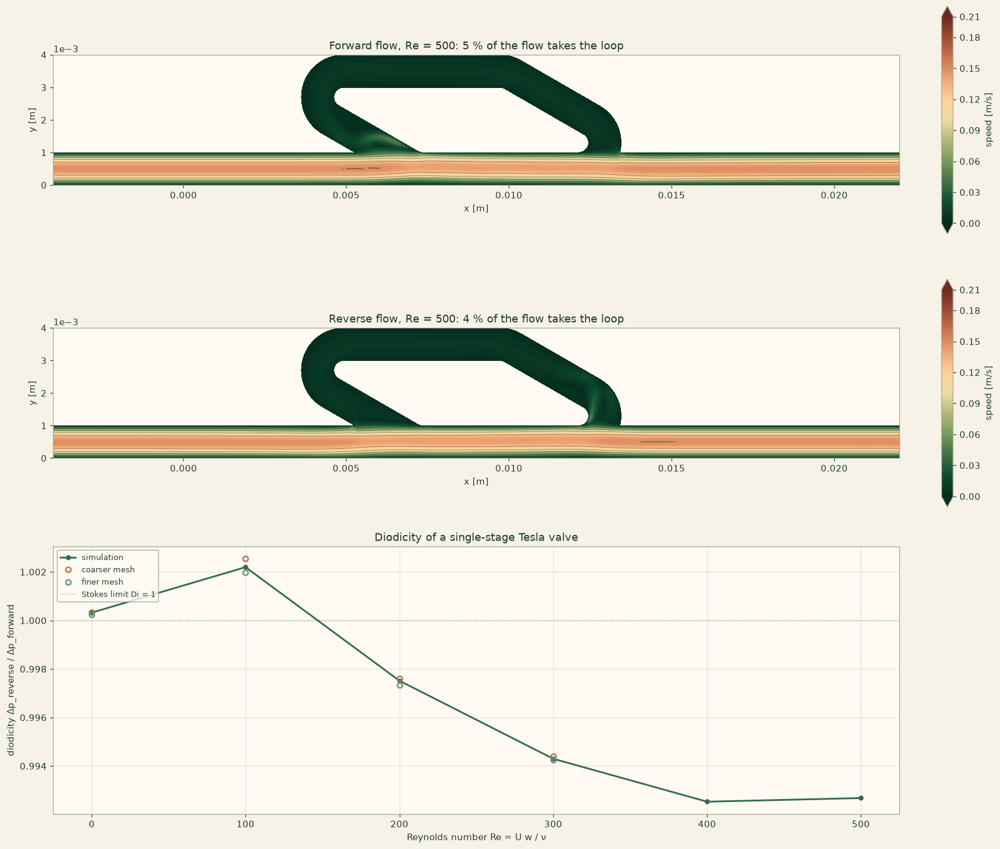
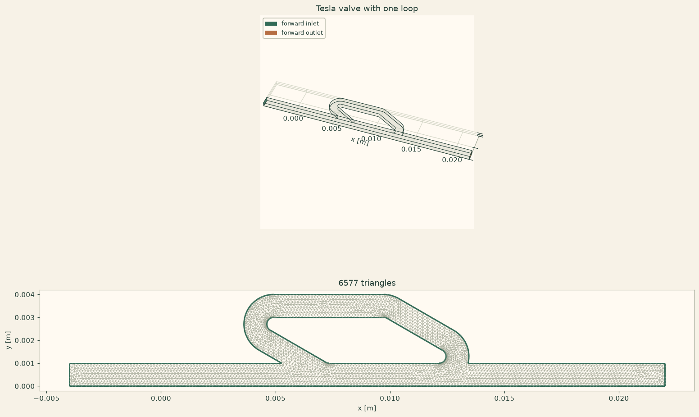

Docs › Examples › Tesla valve: diodicity over the Reynolds number and the loop length
Microfluidics · 2D
Tesla valve: diodicity over the Reynolds number and the loop length
A four-stage valve of the Tesla family without moving parts, flown through in both directions from creeping flow to Re = 300, for three loop lengths.
Run locally with OneSimulation. The example downloads are free. Running them requires an activated runtime. Runtime Alpha 0.2.1a7 · CPython 3.13 on macOS (Apple Silicon), Ubuntu 22.04 (x86-64), and Windows x64. Installation and activation · View pilot plans. Scope of the reference checks.

What it computes
The valve is read from STEP files and cut to its cross-section; OneSimulation solves the planar Navier-Stokes equations with Taylor-Hood elements for both flow directions, raising the Reynolds number by Newton continuation, and evaluates pressure drops and diodicity for three loop lengths and two meshes. The script that builds the STEP files comes with the notebook.
What it checks
The diodicity is 1 within 2e-3 in creeping flow (Stokes reversibility) and rises to 1.30 at Re = 100, 2.20 at Re = 200 and 2.84 at Re = 300, inside or above the range of about 1.2 to 2 published for multi-stage Tesla valves; a longer loop (2.0 mm) lowers it to 1.84 at Re = 200, and the finer mesh gives up to 13 % higher values at Re = 150 to 200.
Geometry
The notebook starts at the import of the CAD files tesla_valve_diodicity.step, tesla_valve_diodicity_10.step, tesla_valve_diodicity_15.step, tesla_valve_diodicity_20.step: STEP (AP242), readable by any CAD program, with the names of the faces that the boundary conditions use. Put them next to the notebook.

The geometry script
The script tesla_valve_diodicity_geometry.py builds the geometry with the CAD objects of OneSimulation and writes the files. Change a dimension there, run it, and run the notebook again.
"""Geometry of the OneSimulation example "Tesla valve: diodicity and loop length".
Builds a four-stage Tesla-type valve with the CAD objects of OneSimulation, channels 1 mm wide: the
main channel meanders in right angles (rises of 4 mm, runs of 4 mm), and at each corner where it
turns into a run a loop leaves straight on, against the run, turns through a half circle of 1 mm
centreline radius and rejoins the rising or falling part of the main channel 2 mm before the
corner. The part is a slab 0.5 mm thick; the straight ends are the faces inlet_bar.x_min and
outlet_bar.x_max. One file per length of the straight part of the loop: tesla_valve_diodicity_<tenths
of a mm>.step for 1.0, 1.5 and 2.0 mm, and tesla_valve_diodicity.step for 1.5 mm. The example
computes on the cross-section z = 0.25 mm.
"""
from onesim.cad.d3 import AnnularCylinder, Box
mm = 1e-3
width, thickness, radius, run, rise = 1 * mm, 0.5 * mm, 1 * mm, 4 * mm, 4 * mm
bar = lambda x0, y0, x1, y1: Box(
length=abs(x1 - x0) + width,
width=abs(y1 - y0) + width,
height=thickness,
origin=(min(x0, x1) - width / 2, min(y0, y1) - width / 2, 0.0),
)
centreline = [
(-3 * mm, 0),
(0, 0),
(0, rise),
(run, rise),
(run, 0),
(2 * run, 0),
(2 * run, rise),
(3 * run, rise),
(3 * run, 0),
]
for tenths in (10, 15, 20):
loop = tenths / 10 * mm
valve = Box(
length=2 * mm, width=width, height=thickness, origin=(-5 * mm, -width / 2, 0.0)
).named("inlet_bar")
for (x0, y0), (x1, y1) in zip(centreline[:-1], centreline[1:]):
valve = valve | bar(x0, y0, x1, y1)
for x, y, side in (
(0, rise, -1),
(run, 0, 1),
(2 * run, rise, -1),
(3 * run, 0, 1),
):
ring = AnnularCylinder(
inner_radius=radius - width / 2,
outer_radius=radius + width / 2,
length=thickness,
origin=(x - loop, y + side * radius, 0.0),
)
valve = (
valve
| bar(x - loop, y, x, y)
| bar(x - loop, y + 2 * side * radius, x, y + 2 * side * radius)
| (
ring
& Box(
length=2 * radius,
width=4 * radius,
height=thickness,
origin=(x - loop - 2 * radius, y + side * radius - 2 * radius, 0.0),
)
)
)
valve = valve | Box(
length=4 * mm, width=width, height=thickness, origin=(3 * run, -width / 2, 0.0)
).named("outlet_bar")
valve.save(f"tesla_valve_diodicity_{tenths}.step")
if tenths == 15:
valve.save("tesla_valve_diodicity.step")The notebook
The complete notebook, cell by cell. Run it to produce the figures and the comparison printout.
Nikola Tesla's "valvular conduit" (US patent 1,329,559, 1920) started a family of valves without moving parts that resist flow in one direction more than in the other; micropumps use them because they cannot wear or stick. Their figure of merit is the diodicity, the ratio of the pressure drops at the same flow rate in the blocking and the easy direction:
The valve here has a main channel that meanders in right angles and, at every corner, a loop that continues straight on, turns through a half circle and rejoins the main channel before the corner. In one direction the stream must follow the sharp corners of the main channel: it separates at every corner, and a narrow jet between recirculation zones costs pressure. In the other direction the stream runs straight into each loop, which then acts as a second, rounded path beside the corner, so the flow divides and turns smoothly. Inertia makes the difference; in creeping flow both directions cost the same.
The valve comes from the CAD files tesla_valve_diodicity.step and tesla_valve_diodicity_10.step, ..._15.step, ..._20.step, written by tesla_valve_diodicity_geometry.py: channels of width \(w=1\) mm meander in right angles through four stages, each with a loop of centreline radius 1 mm whose straight part is 1.0, 1.5 or 2.0 mm long (the design parameter studied here). The model is the cross-section; it solves the steady Navier-Stokes equations for water. The Reynolds number is \(Re=\bar U w/\nu\) with the mean inflow speed \(\bar U=0.1\) m/s; it is varied through the viscosity.
| side | blocking direction | easy direction | |---|---|---| | inlet_bar.x_min | parabolic inflow, mean speed \(\bar U\) | traction free | | outlet_bar.x_max | traction free | parabolic inflow, mean speed \(\bar U\) | | all walls | no slip | no slip |
Reference. Creeping (Stokes) flow is reversible, so \(Di\to1\) for \(Re\to0\) (up to the small difference between the inflow and the outflow condition). With inertia, published simulations and measurements of multi-stage Tesla valves report diodicities that rise from 1 with the Reynolds number to values between about 1.2 and 2 and more at a few hundred, growing with the number of stages; two-dimensional models give the upper end (S. M. Thompson, B. J. Paudel, T. Jamal, D. K. Walters, J. Fluids Eng. 136, 081102, 2014; Q. M. Nguyen, J. Abouezzi, L. Ristroph, Nat. Commun. 12, 2884, 2021).
import numpy as np
from onesim.cad.exchange import load
from onesim.materials import NewtonianFluid
from onesim.meshing import TriangularMesher
from onesim.numerics import Numerics
from onesim.numerics.fem import FiniteElement, TaylorHood
from onesim.numerics.linear import SparseDirect
from onesim.numerics.nonlinear import Newton
from onesim.physics.hydrodynamics import (
FixedVelocity,
FlowTraction,
NoSlipWall,
PlanarIncompressibleNavierStokes,
)
from onesim.simulation import Problem, Simulation
from onesim.visualization import plots, theme
theme.set()Geometry and mesh
section cuts each slab at half thickness; the faces keep their names. Triangles of a sixth of the channel width; the mesh study uses an eighth for the loop length 1.5 mm.
mm, width, speed = 1e-3, 1e-3, 0.1
parts = {
loop: load(f"tesla_valve_diodicity_{round(10 * loop)}.step")
for loop in (1.0, 1.5, 2.0)
}
valves = {
loop: part.section((0, 0, 1), origin=(0, 0, part.size[2] / 2))
for loop, part in parts.items()
}
runs = [
(1.5, 6, (0.01, 50, 100, 150, 200, 250, 300)),
(1.0, 6, (0.01, 50, 100, 150, 200)),
(2.0, 6, (0.01, 50, 100, 150, 200)),
(1.5, 8, (0.01, 50, 100, 150, 200)),
]
meshes = {
(loop, cells): TriangularMesher(target_size=width / cells).generate(valves[loop])
for loop, cells, _ in runs
}
part = parts[1.5]
fig = plots.figure(layout=[["geometry"], ["mesh"]], size=(14, 10))
plots.geometry(
part,
selection={
"inlet of the blocking direction": part.boundaries["inlet_bar.x_min"],
"inlet of the easy direction": part.boundaries["outlet_bar.x_max"],
},
labels=False,
camera=plots.Camera(elevation=55, azimuth=-80),
title="Four-stage Tesla valve, loop length 1.5 mm",
ax=fig["geometry"],
)
plots.mesh(
meshes[1.5, 6],
groups=("all",),
legend=False,
title=f"{meshes[1.5, 6].cell_count} triangles",
ax=fig["mesh"],
)
plots.show()Model
For each geometry, mesh and direction the Reynolds number is raised in steps of 50; every Newton solve starts from the previous solution. The loop length 1.5 mm is followed to \(Re=300\), the parameter and mesh studies to \(Re=200\).
profile = lambda y: 6 * speed * (y + width / 2) * (width / 2 - y) / width**2
results = {}
for loop, cells, levels in runs:
faces = valves[loop].boundaries
left, right = faces["inlet_bar.x_min"], faces["outlet_bar.x_max"]
for direction, (inlet, outlet, sign) in {
"blocking": (left, right, 1.0),
"easy": (right, left, -1.0),
}.items():
guess = (0.0, 0.0)
for reynolds in levels:
model = PlanarIncompressibleNavierStokes(
domain=valves[loop].domain(),
material=NewtonianFluid(
density=1000.0, dynamic_viscosity=1000.0 * speed * width / reynolds
),
)
problem = Problem(
name=f"Tesla valve, {direction}",
geometry=valves[loop],
physics=(model,),
boundary_conditions=(
FixedVelocity(
boundary=inlet,
physics=model,
value=lambda y: np.column_stack((sign * profile(y), 0 * y)),
),
NoSlipWall(boundary=faces.all - left - right, physics=model),
FlowTraction(boundary=outlet, physics=model, value=(0.0, 0.0)),
),
)
numerics = Numerics(
spatial=FiniteElement(element=TaylorHood()),
initial_guess={model.velocity: guess},
nonlinear_solver=Newton(
linear_solver=SparseDirect(),
absolute_tolerance=1e-5,
relative_tolerance=1e-6,
maximum_iterations=30,
),
)
solved = Simulation(
problem=problem, mesh=meshes[loop, cells], numerics=numerics
).solve_stationary()
results[loop, cells, direction, reynolds] = solved.field(
model.velocity
), solved.field(model.pressure)
previous = results[loop, cells, direction, reynolds][0]
guess = lambda x, y: previous.evaluate(np.column_stack((x, y)))Results
The pressure drop is the difference of the mean pressures across the two straight ends. The thin jets and separation zones make the diodicity above \(Re\approx100\) sensitive to the mesh; the mesh study shows by how much.
across = np.linspace(-width / 2, width / 2, 101)
mean_pressure = lambda pressure, x: np.mean(
pressure.evaluate(np.column_stack((np.full_like(across, x), across)))
)
ends = {
"blocking": (-5 * mm + 1e-9, 16 * mm - 1e-9),
"easy": (16 * mm - 1e-9, -5 * mm + 1e-9),
}
drops = {
key: mean_pressure(pressure, ends[key[2]][0])
- mean_pressure(pressure, ends[key[2]][1])
for key, (velocity, pressure) in results.items()
}
diodicity = {
(loop, cells, reynolds): drops[loop, cells, "blocking", reynolds]
/ drops[loop, cells, "easy", reynolds]
for loop, cells, levels in runs
for reynolds in levels
}
print("loop length 1.5 mm:")
print(" Re Δp blocking [Pa] Δp easy [Pa] diodicity")
for reynolds in runs[0][2]:
print(
f"{reynolds:6.2f} {drops[1.5, 6, 'blocking', reynolds]:16.4f} {drops[1.5, 6, 'easy', reynolds]:14.4f} {diodicity[1.5, 6, reynolds]:11.4f}"
)
print(
f"\nStokes limit: diodicity at Re = 0.01 differs from 1 by {abs(diodicity[1.5, 6, 0.01] - 1):.1e}"
)
print("parameter study, diodicity at Re = 100, 150, 200:")
for loop in (1.0, 1.5, 2.0):
print(
f" loop length {loop:.1f} mm: "
+ ", ".join(
f"{diodicity[loop, 6, reynolds]:.3f}" for reynolds in (100, 150, 200)
)
)
print(
f"mesh study, loop length 1.5 mm, Re = 100, 150, 200: {meshes[1.5, 6].cell_count} triangles "
+ ", ".join(f"{diodicity[1.5, 6, reynolds]:.4f}" for reynolds in (100, 150, 200))
+ f"; {meshes[1.5, 8].cell_count} triangles "
+ ", ".join(f"{diodicity[1.5, 8, reynolds]:.4f}" for reynolds in (100, 150, 200))
)Figure
The speed at \(Re=300\) in both directions - in the blocking direction a narrow jet follows the sharp corners while the loops stand almost still, in the easy direction the loops carry part of the flow round the corners - and the diodicity over the Reynolds number for the three loop lengths.
fig = plots.figure(layout=[["blocking"], ["easy"], ["diodicity"]], size=(14, 15))
for direction in ("blocking", "easy"):
plots.surface(
results[1.5, 6, direction, 300][0],
component=lambda u, position: np.linalg.norm(u, axis=1),
limits=(0.0, 0.25),
contours=6,
subdivisions=2,
label="speed [m/s]",
title=f"{direction.capitalize()} direction, Re = 300",
ax=fig[direction],
)
plots.line(
y={
f"loop {loop:.1f} mm": (
[reynolds for reynolds in levels],
[diodicity[loop, 6, reynolds] for reynolds in levels],
)
for loop, cells, levels in runs[:3]
},
points={
"loop 1.5 mm, finer mesh": (
[0.01, 50, 100, 150, 200],
[diodicity[1.5, 8, reynolds] for reynolds in (0.01, 50, 100, 150, 200)],
)
},
hlines={"Stokes limit Di = 1": 1.0},
markers=True,
xlabel="Reynolds number Re = U w / ν",
ylabel="diodicity Δp_blocking / Δp_easy",
title="Diodicity of the four-stage valve",
legend="upper left",
ax=fig["diodicity"],
)
plots.show()Going further
Change the radius of the loops, the length of the runs or the number of stages in tesla_valve_diodicity_geometry.py and write the STEP files again: this is the design study behind optimized valves. Above \(Re\approx300\) the steady flow in the blocking direction becomes unstable; a transient run with Simulation.run shows the shedding jets that real valves exploit under pulsating flow.